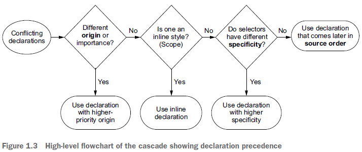
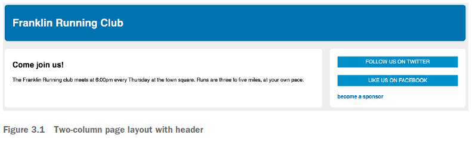
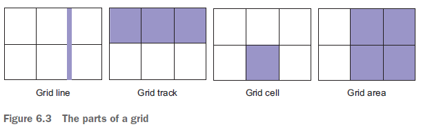
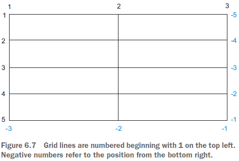

home/programming/book-notes
CSS in Depth, Keith Grant
- Ch. 1 Reviewing the fundamentals
- Ch. 2 Working with relative units
- Ch. 3 Mastering the box model
- Ch. 4 Making sense of floats
- Ch. 5 Flexbox
- Ch. 6 Grid layout
- Ch. 7 Positioning and stacking contexts
1 Cascade, specificity, and inheritance
Listing 1.1 (Wombat Coffee Roasters)
When two or more rules target the same element, they conflict. For example:
h1 {
font-family:serif;
}
#page-title {
font-family: sans-serif;
}
.title {
font-family: monospace;
}
The cascade is the name of the set of rules that determines how conflicts are resolved. The cascade considers:
- Stylesheet origin (where the styles come from)
- Selector specificity (which selectors take precedence)
- Source order (order in which styles are declared in the stylesheet)

Terminology
Declaration: a property and a value
Example: color: black;
Do not confuse declarations with attributes, which is HTML syntax. For example, in <a href="/">, the attribute is href.
A group of declarations inside curly braces is a declaration block. It is preceded by a selector, such as body shown below:
body {
color: black;
font-family: sans-serif;
}
Together, a selector and declaration block is called a ruleset.
Language constructs beginning with an "at" symbol (@) are called at-rules. For example, @import rules and @media queries.
1.1.1 Understanding stylesheet origin
The browser's default styles are user agent styles. Custom styles are called author styles. A user stylesheet may also be defined, and fall in between the user agent and author styles. However, they are fairly rare.
A declaration can be marked !important (added to the end of the declaration, before the semicolon).
Important declarations are treated with a higher priority, even higher than inline styles (except !important inline styles).
1.1.2 Understanding specificity
Inline styles (defined with the HTML style attribute), are applied only to that element (effectively "scoped" to that element). They have no selectors and override any declarations from stylesheets, except those marked !important.
Important inline styles cannot be overridden by anything.
Selector specificity
The rules of selector specificity are:
- If a selector has more IDs, it wins
- If it is a tie, the selector with most classes wins
- If it is a tie, the selector with most tag names wins
Pseudo-class selectors such as :hover and attribute selectors such as [type="input"] have the same specificity as a class selector.
Since IDs take precedence over classes, it becomes harder to override later. You would have to use another ID.
A notation for specificity
A number form such as "1,2,2" indicates a specificity of one ID, two classes, and two tags.
If including inline styles, the leftmost digit as 1 represents an inline style, while 0 means it's not.
Instead of trying to raise the specificity of a selector, also consider reducing the specificity of neighboring selectors.
Generally, it's best to keep specificity as low as you can, so that there are more options to override them later.
1.1.3 Understanding source order
If everything up to here are the same, then the declaration that appears later in the stylesheet (or in later stylesheets included in the page) takes precedence.
Link styles and source order
Styles for links should appear in this order:
a:linka:visiteda:hovera:active
Cascaded values
The declaration that "wins" the cascade is called a cascaded value.
Two rules of thumb
- Don't use IDs in your selector. It becomes hard to override it later.
- Don't use
!important. This is even harder to override later.
1.2 Inheritance
An element can receive styles from inheritance. Although it is often conflated with the cascade, they are not the same thing.
When an element has no cascaded value for a given property, it may inherit one from an ancestor element. For example, the value of font-family may be inherited from the <body> element.
Note: Not all properties are inherited. Primarily, text properties are inherited.
DevTools show which values are cascaded and inherited.
1.3 Special values
inherit and initial are special values that help you manipulate the cascade.
1.3.1 The inherit keyword
inherit overrides a cascaded value, using the parent's value instead. For example, if you wish a footer's links to be gray instead of its typical value, set:
a:link {
color: blue;
}
.footer {
color: #666;
background-color: #ccc;
}
.footer a {
color: inherit;
text-decoration: underline;
}
inherit also forces inheritance of a property not normally inherited, such as border and padding.
1.3.2 The initial keyword
Using initial as the value will reset it to its default value.
Note: setting width: auto; resets the width because auto is its default (initial) value. However, auto isn't the default value for all properties, nor is it valid for some properties.
Warning: shorthand properties (such as font, border, and background) will silently set omitted values to their initial values. This behavior can override styles you specified elsewhere.
1.4.2 Understanding the order of shorthand values
The border, margin, and padding properties accept up to four values, starting from the top and going clockwise. If only two values are given, they are the vertical, then horizontal values.
On the other hand, two-value properties like background-position, box-shadow, and text-shadow have this order reversed. The mnemonic is that these more accurately represent Cartesian coordinates, (x, y), that correspond to horizontal, then vertical, values.
2 Working with relative units
Pixels are absolute units. em and rem are relative units. In general, 96 pixels are around 1 physical inch. A pixel is not necessarily the physical monitor's pixel, such as in high-resolution displays.
CSS brings a late-binding of styles to a web page. Styles aren't pulled together until after the authoring of both HTML and CSS is complete.
Responsive styles "respond" differently based on the size of the browser window.
Relative units allow you to create more general solutions (that work under different circumstances).
2.2 Ems and rems
1 em is the font size of the current element.
Values declared using relative units are evaluated by the browser to an absolute value, called the computed value.
font-size ems are derived from the inherited font size.
For most browsers, the default font size is 16 px. The keyword medium calculates to 16 px.
Calculation of ems is cumulative. So nested lists might result in shrinking font sizes. Rems (root ems) may be used to avoid this repeated calculation.
2.2.2 Using rems for font-size
In the DOM (Document Object Model), the root node is the ancestor of all other elements in the document. It has a special pseudo-class selector, :root that you can use to target it. Using :root will have the specificity of a class rather than of a tag (html).
rem is short for root em. They are relative to the root element.
Always specify font sizes with relative units or percentages, because the user can then simply zoom in and out.
Tip: When in doubt, use rems for font size, pixels for borders, and ems for everything else.
Setting a sane default font size
Set a value at the root:
:root {
font-size: 0.875em;
}
A > in the selector is a direct descendant combinator. .panel > h2 targets an h2 element that is a child element of a .panel element.
2.3.2 Making the panel responsive
@media rules specify styles that will be applied only to certain screen sizes or media types.
:root {
font-size: 0.75em;
}
@media (min-width: 800px) {
:root {
font-size: 0.875em;
}
}
@media (min-width: 1200px) {
:root {
font-size: 1em;
}
}
Each ruleset will override the rulesets above it if the size of the screen is at least that many pixels wide.
2.3.3 Resizing a single component
By using rem for the main ruleset and em for a variation, the component's size can be easily changed:
.panel {
font-size: 1rem;
padding: 1em;
}
.panel > h2 {
font-size: 0.8em;
}
.panel.large {
font-size: 1.2rem;
}
A normal panel would only have class="panel" while the larger one will be class="panel large"
2.4 Viewport-relative units
The viewport is the framed area in the browser window where the web page is visible.
vh is 1/100th of the viewport height, and vw is 1/100th of the viewport width.
vmin is 1/100th of the smaller dimension (width or height). vmaxis the larger dimension.
2.4.2 Using calc() for font size
Arithmetic operators (+, -, *, /) must be surrounded by whitespace.
A combination of em and vw can be used for a reasonable auto-scaling font size. It is a good alternative to using media queries.
:root {
font-size: calc(0.5em + 1vw);
}
Using vw alone results in a range that is too large between mobile devices and a large widescreen monitor.
2.6 Custom properties (aka CSS variables)
A custom property is defined like this:
:root {
--main-font: Helvetica, Arial, sans-serif;
}
Custom property names must start with two dashes, --. They must also be declared inside a declaration block. When a descendant element uses a variable, it resolves to this value.
The var() function is used to refer to previously defined custom properties. It accepts a second argument as a fallback value:
p {
color: var(--primary-color, blue);
}
An alternative way to define a fallback (for old browsers that don't have var) is:
color: black; color: var(--main-color);
Custom properties shadow those of the element's ancestors. So a variable in :root can be overridden by a dark container.
2.6.2 Changing custom properties with JavaScript
var rootElement = document.documentElement;
var styles = getComputedStyle(rootElement);
var mainColor = styles.getPropertyValue('--main-bg');
To set a new value:
rootElement.style.setProperty('--main-bg', '#cde');
3 Mastering the box model
The target webpage should look like this:
The default behavior of the box model is that the width and height values you define apply to the content. Then, the border and margins are added to the width and height.
For example, you might define a width of 300 px, a padding of 10 px and a 1 px border. The total rendered width is 322 px (padding and border apply to the left and right).
Avoid magic numbers such as 26% because they are unreliable. It may not work on different viewports.
Using calc() is an improvement, but there is still a better way.
3.1.2 Adjusting the box model
The box-sizing property has a default value of content-box.
Setting box-sizing to border-box will change the rendering behavior so that the width and height values set will be the combined size of the contend, padding, and border.
3.1.3 Using universal border-box sizing
To use the same box-sizing everywhere, use the following:
*,
::before,
::after {
box-sizing: border-box;
}
If this setup conflicts with third-party CSS rulesets, use:
:root {
box-sizing: border-box;
}
*,
::before,
::after {
box-sizing: inherit;
}
.third-party-component {
box-sizing: content-box;
}
3.1.4 Adding a gutter between columns
calc() is a good way to remove some space of an object and allow that free space to be used in another way. Also, units may be mixed.
... width: calc(30% - 1.5em); margin-left: 1.5em;
3.2 Difficulties with element height
Typically, it's best to avoid setting explicit heights on elements. Normal document flow is designed to work with a constrained width, but an unlimited height.
Inline elements flow along with the text of the page, from left to right, while block-level elements fall on individual lines, with a line break above and below.
3.2.1 Controlling overflow behavior
The overflow property supports four values:
visible(default): everything is visible, even when it overflows the container's edgeshidden: content that overflows the padding edge is clippedscroll: scrollbars are added, even when there's no overflow, in which case, they will be disabled (grayed)auto: scrollbars are added only if the content overflows
When control is needed horizontally or vertically, set the overflow-x and overflow-y properties.
3.2.2 Applying alternatives to percentage-based heights
The height of containers is typically determined by the height of its children, leading to a circular definition (percentages refers to the size of an element's containing block).
Instead of writing the ineffective height: 100%; rule, a height of 100vh can be used.
Columns of equal height
There are two ways of accomplishing this: a table layout and a flexbox.
CSS table layouts
First, make the container a display: table; and each column display: table-cell;
Note: margins do not work with tables. A border-spacing must be defined, plus a wrapper with negative margins to cancel out the outer border-spacing. Note that the x, y order is reversed in border-spacing.
.wrapper {
margin: 0 -1.5em;
}
.container {
display: table;
width: 100%;
border-spacing: 1.5em 0;
}
.main {
display: table-cell;
width: 70%;
}
.sidebar {
display: table-cell;
width: 30%;
}
Negative margins pull the edges out.
Flexbox
By default, flexbox produces elements of equal height.
.container {
display: flex;
}
.main {
width: 70%;
}
.sidebar {
width: 30%;
padding: 1.5em;
margin-left: 1.5em;
}
3.2.3 Using min-height and max-height
Instead of explicitly defining a height, specify the minimum and maximum bounds.
3.2.4 Vertically centering content
vertical-align only affects inline and table-cell elements. Within a cell, vertical-align controls the alignment of the contents within the cell.
Adding top and bottom padding is one way of vertically centering content.
For a container of a specific height, use display: table-cell; and vertical-align: middle;
For a single line of text, you can set a large line-height.
3.3 Negative margins
For negative left and top margins, the entire element is pulled leftward or upward.
For negative right or bottom margins, the succeeding elements are pulled leftward or upward.
Warning: Elements that overlap because of negative margins may become unclickable.
3.4 Collapsed margins
Adjoining margins will overlap, combining to form a single margin. The size of the collapsed margin is equal to the largest of the joined margins. More than two margins may collapse.
Only top and bottom margins collapse. Horizontal ones do not.
Margins of flexbox items don't collapse.
Padding may also be used instead of margins.
Applying overflow: auto; (or anything other than visible) prevents margins inside the container from collapsing with those outside the container.
table-cell elements don't have a margin.
3.5 Spacing elements within a container
The adjacent sibling combinator (+) will target only elements that immediately follow other elements as siblings.
.button-link {
display: block;
padding: 0.5em;
}
.button-link + .button-link {
margin-top: 1.5em;
}
A more general solution is * + *, that targets any element that follows any other element.
body * + * {
margin-top: 1.5em;
}
Some elements might have to override this global setting with margin-top: 0;
4 Making sense of floats
4.1 The purpose of floats
A float pulls an element (often an image) to one side of its container, allowing the document flow to wrap around it.
Floating multiple elements in the same direction causes them to stack alongside one another.
The double container pattern places content inside two nested containers, then sets margins on the inner container to position it within the outer one.
<body> can serve as the outer container.
Using clear to a float causes the container to expand to the bottom of the floats.
Pseudo-elements begin with a double colon (::). The most common pseudo-elements are ::before and ::after
A clearfix is an approach to solve the problem of containing floats.
.clearfix::after {
display: block;
content: " ";
clear: both;
}
Another version of clearfix contains all margins.
.clearfix::before,
.clearfix::after {
display: table;
content: " ";
}
.clearfix::after {
clear: both;
}
A block formatting context (BFC) is a region of the page where elements are laid out, and isolates its contents from the outside context. Contents inside a BFC will not overlap or interact with elements on the outside.
Applying any of the following triggers a BFC:
float: leftorright(anything butnone)overflow: hidden, auto,orscroll(anything butvisible)display:(any of the following block containers):inline-blocktable-celltable-captionflexinline-flexgridinline-grid
position: absoluteorfixed
A block formatting context should have overflow set to hidden or auto. Often, auto is the simplest approach.
A CSS framework is a library of prebuilt CSS code that provides styles for common patterns.
[class*="column-"] { ... } is an attribute selector targeting elements based on their class attribute. It is used in the custom column grid CSS code in section 4.5.2, Building a grid system.
5 Flexbox
5.1 Flexbox principles
Applying display: flex; to an element turns it into a flex container, and its direct children turn into flex items.
By default, flex items align side by side, left to right, all in one row.
While the flex container fills all available width (like a block element), the flex items do not necessarily fill all the way to the end.
Flex items are all the same height.
display: inline-flex; behaves like an inline-block element.
Flex items are placed along a line called the main axis. Perpendicular to it is the cross axis. Its endpoints are called main-start, main-end, cross-start, cross-end.
5.2 Flex item sizes
The flex property controls the size of the flex items along the main axis.
flex is shorthand for three different sizing properties:
flex-grow: determines how space will be consumed by the flex items. Must be a non-negative integer. If an item has a flex-grow of 0, it won't grow past its flex basis. Higher values have more "weight". (default:1)flex-shrink: determines whether a flez item should shrink to prevent overflow. If flex-shrink is 0, it will not shrink. (default:1)flex-basis: an initial "main size" for each flex item (default:0%orauto)
Tip: prefer using the flex shorthand instead of defining the three individual properties. The default values are generally useful.
Example: The "Holy Grail" layout has two sidebars with fixed width, and a center column that is "fluid" (grows to fill the available space)
[ flex: 0 0 200px ] [ flex: 1 ] [ flex: 0 0 200px ]
Skipped: 5.3 (p. 130) to end of chapter
6 Grid layout
The CSS grid lets you define a two-dimensional layout of columns and rows and then place elements within this grid.
6.1.1 Building a basic grid
The objective of this section is to create this kind of grid:
[ a ] [ b ] [ c ] [ d ] [ e ] [ f ]
The HTML above is rendered as:
An element with display: grid; becomes a grid container. Its child elements become grid items.
The container behaves like a block display element, taking up all 100% of the available width. It is also possible to use the value inline-grid.
The fr unit stands for fraction unit. It behaves like the factor in flex-grow.
The declaration grid-template-columns: 1fr 1fr 1fr; creates three columns with an equal size. Other units may be used, such as px, em, 50%.
grid-gap defines the amount of space to add to the gutter between each grid cell. Using two values specifies the vertical and horizontal spacing (for example, grid-gap: 0.5em 1em).
6.2 Anatomy of a grid
The most important elements of a grid are:
- Grid line: makes up the structure of the grid. It may be vertical or horizontal and lie on either side of a row or a column. The grid gap lies atop the grid lines.
- Grid track: the space between two adjacent grid lines. Horizontal tracks are rows and vertical tracks are columns.
- Grid cell: a single space on the grid, where a horizontal grid track and vertical grid track overlap.
- Grid area: a rectangular area on the grid made up by one or more grid cells. Such an area is between two vertical grid lines and two horizontal grid lines.

Declaring grid-template-columns: 1fr 1fr 1fr; defines three vertical grid tracks of equal width. At the same time, four grid lines are defined (the two edges and two between each grid track).
The repeat(n, value) function serves to copy the value n times. For example, repeat(4, auto) is the same as auto auto auto auto.
6.2.1 Numbering grid lines
The browser assigns numbers to each grid line as follows:

These numbers are used to indicate where each item should be placed by setting the grid-column and grid-row properties.
For example, if you want a grid item to span from grid line 1 to 3, apply grid-column: 1 / 3; to the element.
grid-column and grid-row are shorthand for grid-column-start and grid-column-end. The forward slash is needed in the shorthand version. The spaces before and after the slash are optional.
The keyword span defines how many grid tracks to span (for example, grid-row: span 1;).
Generally speaking, flexbox is one-dimensional, and grid is two-dimensional.
Flexbox works from the content out, whereas a grid works from the layout in.
6.3 Alternate syntaxes for laying out grid items
It is possible to have named grid lines and named grid areas.
6.3.1 Naming grid lines
When declaring grid tracks, place a name in brackets to name a grid line between any two tracks:
grid-template-columns: [start] 2fr [center] 1fr [end]; grid-column: start / center;
A grid line may have multiple names: [left-end right-start] 1fr
By naming lines with the suffixes -start and -end, an area in between them will be implicitly defined (for example, grid-column: left spans from left-start to left-end).
Names may be repeated. To refer to them, write: row 3.
Skipped: 6.3.2 (p. 160) to end of chapter.
7 Positioning and stacking contexts
The position property is often used for building dropdown menus, modal dialogs, and other commonly used effects.
Use variables to keep track of z-indexes (p. 196)
It's easy for a stylesheet to devolve into a z-index war. It's better to use custom properties (variables) to keep them organized:
--z-loading-indicator: 100; --z-nav-menu: 200; --z-dropdown-menu: 300 --z-modal-backdrop: 400; --z-modal-body: 410;
Use increments of 10 or 100 to leave room for new values without being forced to rewrite other values.
END OF FILE